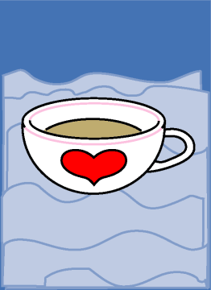

→
Damian Cugley →
Alleged Tarot 2002 →
png →
→
Damian Cugley →
Alleged Tarot 2002 →
png →
| « The King of Wands | The Two of Cups » | |
|  | ||
|
The Ace of Wands The Ace of Swords The Ace of Coins |
||
Upright: emotion, love, psychic powers
Reversed: sadness, lonliness, disappointment
Cups relate to the element of Water in an obvious way and are as feminine in shape in the same way swords and wands are phallic. The suit of Cups is largely associated with home life, domestic relations, love, sensitivity, and emotions, which I have alluded to by making my cup a tea cup with tea in it. Cups also represents artistic inspiration and the subconscious mind.
The Ace of Cups often represents a warm, loving, empathetic person. The heart on the side also relates to this emotional sense, and also to the correspondence between Cups and the modern suit of Hearts.
See also Thirteen’s description on the Aeclectic Tarot site
If your browser supports SVG, then you should visit the SVG version of this page. It is so much more cool!